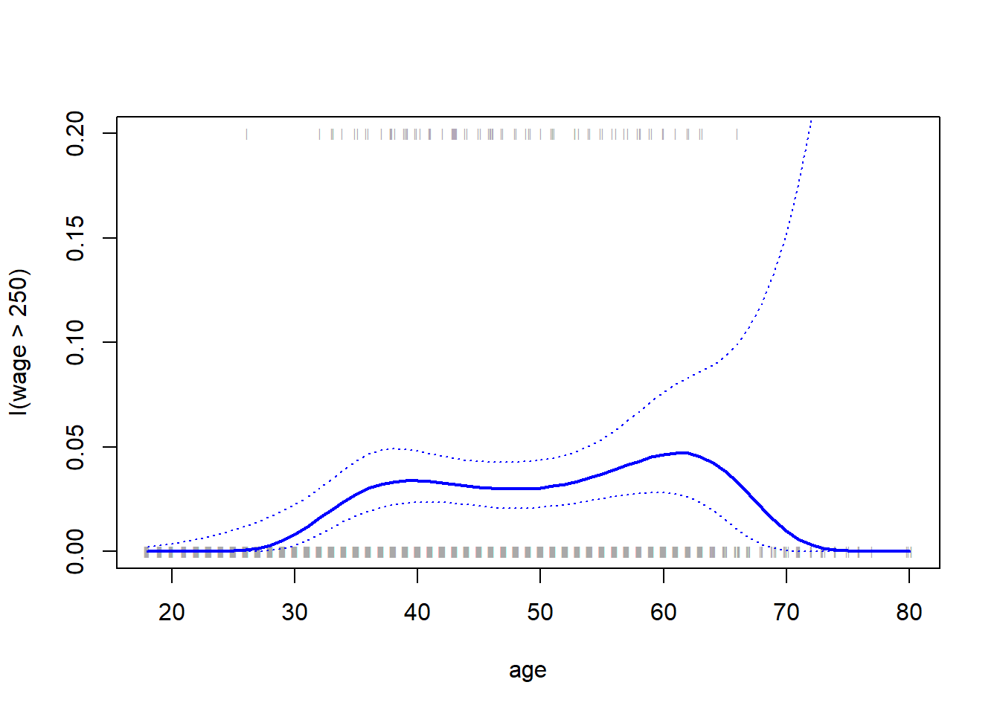
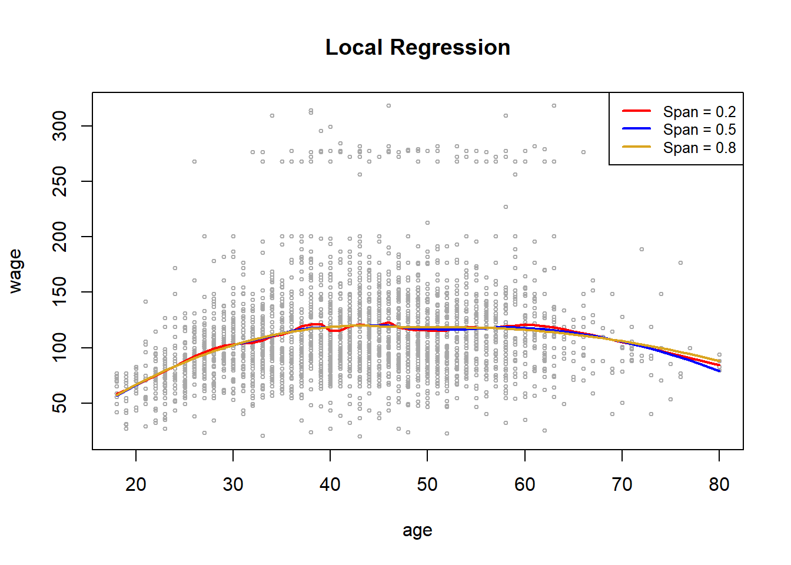
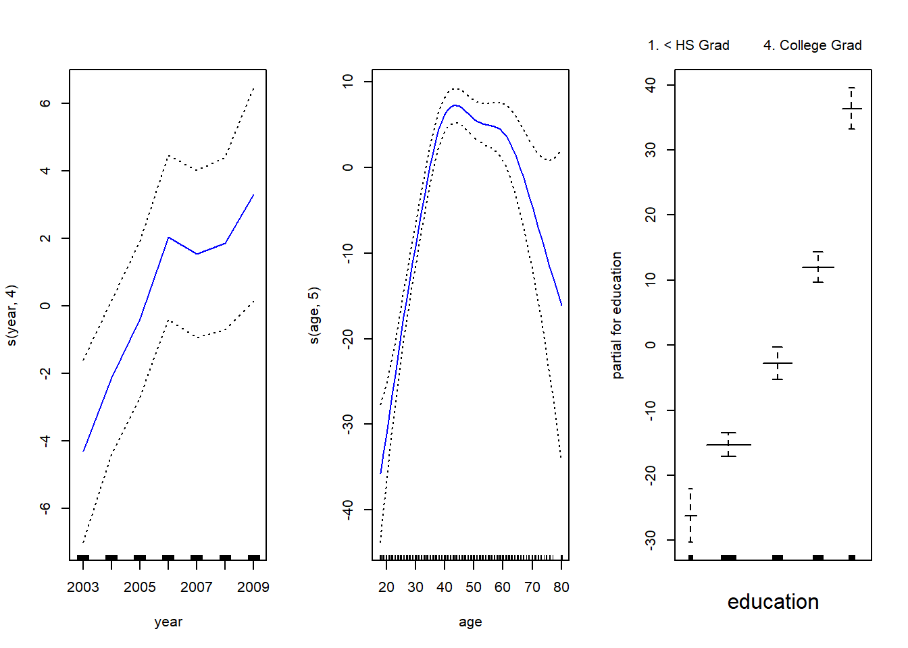
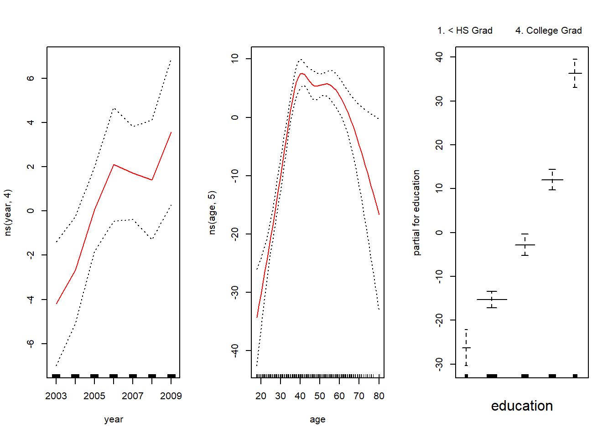
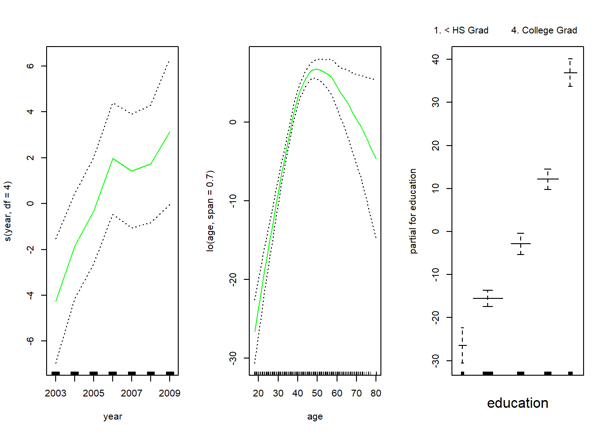
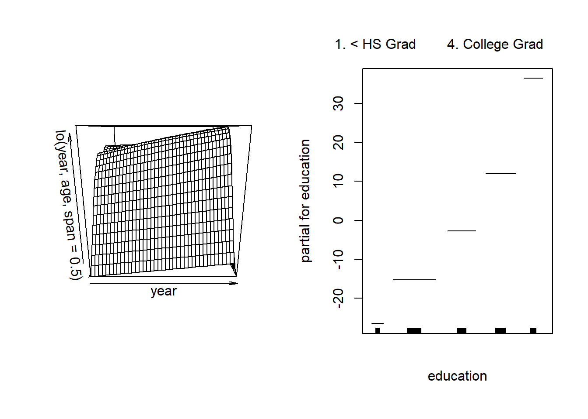
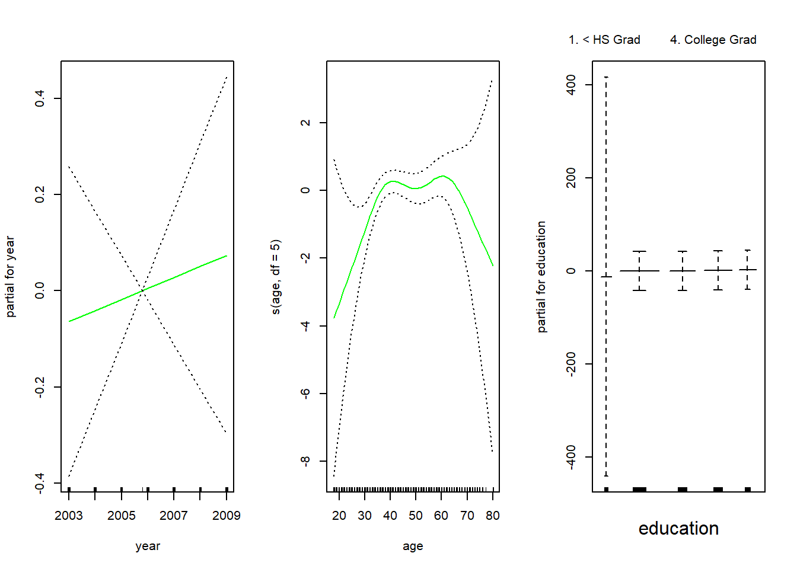

library(ISLR2)
attach(Wage) Lab 07 Non-linear models
1 Subset selection
In this lab, we will analyze the Wage data set in the {ISLR2} package, in order to illustrate non-linear fitting procedures in R.
Polynomial regression
We now examine how a non-linear model can be produced. We first fit the model using the following command
fit <- lm(wage ~ poly(age, 4), data = Wage )
coef(summary(fit)) Estimate Std. Error t value Pr(>|t|)
(Intercept) 111.70361 0.7287409 153.283015 0.000000e+00
poly(age, 4)1 447.06785 39.9147851 11.200558 1.484604e-28
poly(age, 4)2 -478.31581 39.9147851 -11.983424 2.355831e-32
poly(age, 4)3 125.52169 39.9147851 3.144742 1.678622e-03
poly(age, 4)4 -77.91118 39.9147851 -1.951938 5.103865e-02This syntax fits a linear model, using the lm() function, in order to predict wage using a fourth-degree polynomial in age: poly(age, 4). The poly() command allows us to avoid having to write out a long formula with powers of age. The function returns a matrix whose columns are a basis of orthogonal polynomials, which essentially means that each column is a linear combination of the variables age, age^2, age^3 and age^4.
However, we can also use poly() to obtain age, age^2, age^3 and age^4 directly, if we prefer. We can do this by using the raw = TRUE argument to the poly() function. Later we see that while this does not affect the model in a meaningful way, it affects the coefficient estimates, but it does not affect the fitted values obtained.
fit2 <- lm(wage ~ poly (age, 4, raw = T), data = Wage)
coef(summary(fit2)) Estimate Std. Error t value Pr(>|t|)
(Intercept) -1.841542e+02 6.004038e+01 -3.067172 0.0021802539
poly(age, 4, raw = T)1 2.124552e+01 5.886748e+00 3.609042 0.0003123618
poly(age, 4, raw = T)2 -5.638593e-01 2.061083e-01 -2.735743 0.0062606446
poly(age, 4, raw = T)3 6.810688e-03 3.065931e-03 2.221409 0.0263977518
poly(age, 4, raw = T)4 -3.203830e-05 1.641359e-05 -1.951938 0.0510386498There are several other equivalent ways of fitting this model, which showcase the flexibility of the formula language in R. For example
I()
fit2a <- lm(wage ~ age + I(age^2) + I(age^3) + I(age^4), data = Wage )
coef(fit2a) (Intercept) age I(age^2) I(age^3) I(age^4)
-1.841542e+02 2.124552e+01 -5.638593e-01 6.810688e-03 -3.203830e-05 This simply creates the polynomial basis functions on the fly, taking care to protect terms like age^2 via the wrapper function I() (remember the ^ symbol has a special meaning in formulas).
cbind()
fit2b <- lm(wage ~ cbind(age, age^2 , age^3 , age^4), data = Wage )This does the same more compactly, using the cbind() function for building a matrix from a collection of vectors; any function call such as cbind() inside a formula also serves as a wrapper.
We now create a grid of values for age at which we want predictions, and then call the generic predict() function, specifying that we want standard errors as well.
attach(Wage)The following objects are masked from Wage (pos = 3):
age, education, health, health_ins, jobclass, logwage, maritl,
race, region, wage, yearagelims <- range(age)
age.grid <- seq(from = agelims[1] , to = agelims[2])
preds <- predict(fit, newdata = list(age = age.grid ), se = TRUE)
# make confidence intervals
se.bands <- cbind (preds$fit + 2 * preds$se.fit , preds$fit - 2 * preds$se.fit)Finally, we plot the data and add the fit from the degree-4 polynomial.
par(mfrow = c(1, 1) , mar = c(4.5, 4.5, 1, 1),
oma = c(0, 0, 4, 0))
# we'll make the right hand plot below...
plot(age, wage, xlim = agelims, cex = .5, col = "darkgrey")
title("Degree-4 Polynomial", outer = T)
lines(age.grid, preds$fit, lwd = 2, col = "blue")
matlines(age.grid, se.bands, lwd = 1, col = "blue", lty = 3)
Here the mar and oma arguments to par() allow us to control the margins of the plot, and the title() function creates a figure title that spans both subplots. We mentioned earlier that whether or not an orthogonal set of basis functions is produced in the poly() function will not affect the model obtained in a meaningful way. What do we mean by this? The fitted values obtained in either case are identical:
preds2 <- predict(fit2, newdata = list(age = age.grid ), se = TRUE )
max( abs(preds$fit - preds2$fit))[1] 7.81597e-11anova()
In performing a polynomial regression we must decide on the degree of the polynomial to use. One way to do this is by using hypothesis tests. We now fit models ranging from linear to a degree-5 polynomial and seek to determine the simplest model which is sufficient to explain the relationship between wage and age. We use the anova() function, which performs an analysis of variance (ANOVA, using an F-test) in order to test the null hypothesis that a model M1 is sufficient to explain the data against the alternative hypothesis that a more complex model M2 is required. In order to use the anova() function, M1 and M2 must be nested models: the predictors in M1 must be a subset of the predictors in M2. In this case, we fit five different models and sequentially compare the simpler model to the more complex model.
fit.1 <- lm(wage ~ age, data = Wage )
fit.2 <- lm(wage ~ poly(age, 2), data = Wage )
fit.3 <- lm(wage ~ poly(age, 3), data = Wage )
fit.4 <- lm(wage ~ poly(age, 4), data = Wage )
fit.5 <- lm(wage ~ poly(age, 5), data = Wage )
# Pr - p-val are mopdels different?
# RSS lower unexplained error is better
anova(fit.1, fit.2, fit.3, fit.4, fit.5)Analysis of Variance Table
Model 1: wage ~ age
Model 2: wage ~ poly(age, 2)
Model 3: wage ~ poly(age, 3)
Model 4: wage ~ poly(age, 4)
Model 5: wage ~ poly(age, 5)
Res.Df RSS Df Sum of Sq F Pr(>F)
1 2998 5022216
2 2997 4793430 1 228786 143.5931 < 2.2e-16 ***
3 2996 4777674 1 15756 9.8888 0.001679 **
4 2995 4771604 1 6070 3.8098 0.051046 .
5 2994 4770322 1 1283 0.8050 0.369682
---
Signif. codes: 0 '***' 0.001 '**' 0.01 '*' 0.05 '.' 0.1 ' ' 1The p-value comparing the linear Model 1 to the quadratic Model 2 is essentially zero (<10−15), indicating that a linear fit is not sufficient. Similarly the p-value comparing the quadratic Model 2 to the cubic Model 3 is very low (0.0017), so the quadratic fit is also insufficient. The p-value comparing the cubic and degree-4 polynomials, Model 3 and Model 4, is approximately 5% while the degree-5 polynomial Model 5 seems unnecessary because its p-value is 0.37. Hence, either a cubic or a quartic polynomial appear to provide a reasonable fit to the data, but lower- or higher-order models are not justified.
poly()
In this case, instead of using the anova() function, we could have obtained these p-values more succinctly by exploiting the fact that poly() creates orthogonal polynomials.
coef(summary(fit.5)) Estimate Std. Error t value Pr(>|t|)
(Intercept) 111.70361 0.7287647 153.2780243 0.000000e+00
poly(age, 5)1 447.06785 39.9160847 11.2001930 1.491111e-28
poly(age, 5)2 -478.31581 39.9160847 -11.9830341 2.367734e-32
poly(age, 5)3 125.52169 39.9160847 3.1446392 1.679213e-03
poly(age, 5)4 -77.91118 39.9160847 -1.9518743 5.104623e-02
poly(age, 5)5 -35.81289 39.9160847 -0.8972045 3.696820e-01Notice that the p-values are the same, and in fact the square of the t-statistics are equal to the F-statistics from the anova() function; for example:
(-11.983)^2[1] 143.5923However, the ANOVA method works whether or not we used orthogonal polynomials; it also works when we have other terms in the model as well. For example, we can use anova() to compare these three models:
fit.1 <- lm(wage ~ education + age , data = Wage )
fit.2 <- lm(wage ~ education + poly(age, 2), data = Wage )
fit.3 <- lm(wage ~ education + poly(age, 3), data = Wage )
anova(fit.1 , fit.2 , fit.3)Analysis of Variance Table
Model 1: wage ~ education + age
Model 2: wage ~ education + poly(age, 2)
Model 3: wage ~ education + poly(age, 3)
Res.Df RSS Df Sum of Sq F Pr(>F)
1 2994 3867992
2 2993 3725395 1 142597 114.6969 <2e-16 ***
3 2992 3719809 1 5587 4.4936 0.0341 *
---
Signif. codes: 0 '***' 0.001 '**' 0.01 '*' 0.05 '.' 0.1 ' ' 1As an alternative to using hypothesis tests and ANOVA, we could choose the polynomial degree using cross-validation.
glm() binomial
Next we consider the task of predicting whether an individual earns more than $250,000 per year. We proceed much as before, except that first we create the appropriate response vector, and then apply the glm() function using family = "binomial" in order to fit a polynomial logistic regression model.
fit <- glm(I(wage > 250) ~ poly(age, 4) , data = Wage , family = binomial )Note that we again use the wrapper I() to create this binary response variable on the fly. The expression wage > 250 evaluates to a logical variable containing TRUEs and FALSEs, which glm() coerces to binary by setting the TRUEs to 1 and the FALSEs to 0.
predict()
Once again, we make predictions using the predict() function.
preds <- predict(fit, newdata = list(age = age.grid ), se = T)However, calculating the confidence intervals is slightly more involved than in the linear regression case. The default prediction type for a glm() model is type = "link", which is what we use here. This means we get predictions for the logit, or log-odds: that is, we have fit a model of the form:
\(log\frac{Pr(Y = 1|X) }{1 − Pr(Y = 1|X)} = X\beta\)
and the predictions given are of the form \(X\hat\beta\). The standard errors given are also for \(X\hat\beta\). In order to obtain confidence intervals for \(Pr(Y = 1 X)\), we use the transformation
\(Pr(Y = 1|X)=\frac{exp(X\beta)}{1 + exp(X\beta)}\)
pfit <- exp (preds $ fit ) / (1 + exp (preds $ fit ))
se.bands.logit <- cbind(preds$fit + 2 * preds$se.fit, preds$fit - 2 * preds$se.fit)
se.bands <- exp(se.bands.logit) / (1 + exp(se.bands.logit))Note that we could have directly computed the probabilities by selecting the type = "response" option in the predict() function.
preds <- predict(fit, newdata = list(age = age.grid ), type = "response", se = T)However, the corresponding confidence intervals would not have been sensible because we would end up with negative probabilities!
That other plot
plot(age , I(wage > 250), xlim = agelims, type = "n", ylim = c(0, .2) )
points(jitter (age), I((wage > 250) / 5), cex = .5, pch = "|", col = "darkgrey ")
lines (age.grid, pfit, lwd = 2, col = "blue ")
matlines(age.grid, se.bands, lwd = 1 , col = "blue ", lty = 3)
par(mfrow=c(1,1))jitter()
We have drawn the age values corresponding to the observations with wage values above 250 as gray marks on the top of the plot, and those with wage values below 250 are shown as gray marks on the bottom of the plot. We used the jitter() function to jitter the age values a bit so that observations with the same age value do not cover each other up. This is often called a rug plot.
cut()
In order to fit a step function, we use the cut() function.
table(cut (age, 4))
(17.9,33.5] (33.5,49] (49,64.5] (64.5,80.1]
750 1399 779 72 fit <- lm(wage ~ cut (age, 4), data = Wage )
coef(summary(fit)) Estimate Std. Error t value Pr(>|t|)
(Intercept) 94.158392 1.476069 63.789970 0.000000e+00
cut(age, 4)(33.5,49] 24.053491 1.829431 13.148074 1.982315e-38
cut(age, 4)(49,64.5] 23.664559 2.067958 11.443444 1.040750e-29
cut(age, 4)(64.5,80.1] 7.640592 4.987424 1.531972 1.256350e-01Here cut() automatically picked the cutpoints at 33.5, 49, and 64.5 years of age. We could also have specified our own cutpoints directly using the breaks option. The function cut() returns an ordered categorical variable; the lm() function then creates a set of dummy variables for use in the re- gression. The age < 33.5 category is left out, so the intercept coefficient of $94,160 can be interpreted as the average salary for those under 33.5 years of age, and the other coefficients can be interpreted as the average additional salary for those in the other age groups. We can produce predictions and plots just as we did in the case of the polynomial fit.
bs() (not what you might think)
In order to fit regression splines in R, we use the {splines} library. Regression splines can be fit by constructing an appropriate matrix of basis functions. The bs() function generates the entire matrix of basis functions for splines with the specified set of knots. By default, cubic splines are produced. (see ch 7 James et al 2021)
Splines
Fitting wage to age using a regression spline is simple:
library(splines)
fit <- lm(wage ~ bs(age, knots = c(25, 40, 60)), data = Wage )
pred <- predict(fit , newdata = list(age = age.grid), se = T)
plot(age, wage, col = "gray")
lines(age.grid, pred$fit , lwd = 2)
lines(age.grid, pred$fit + 2 * pred$se, lty = "dashed", col = 'blue')
lines(age.grid, pred$fit - 2 * pred$se, lty = "dashed", col = 'blue')
df() splines
Here we have prespecified knots at ages 25, 40, and 60. This produces a spline with six basis functions. (Recall that a cubic spline with three knots has seven degrees of freedom; these degrees of freedom are used up by an intercept, plus six basis functions.) We could also use the df option to produce a spline with knots at uniform quantiles of the data.
dim(bs(age, knots = c(25 , 40 , 60) ))[1] 3000 6dim(bs(age, df = 6))[1] 3000 6attr(bs(age, df = 6), "knots") 25% 50% 75%
33.75 42.00 51.00 In this case R chooses knots at ages 33.8, 42.0, and 51.0, which correspond to the 25th, 50th, and 75th percentiles of age. The function bs() also has a degree argument, so we can fit splines of any degree, rather than the default degree of 3 (which yields a cubic spline).
ns()
In order to instead fit a natural spline, we use the ns() function. Here we fit a natural spline with four degrees of freedom.
fit2 <- lm(wage ~ ns(age, df = 4), data = Wage)
pred2 <- predict(fit2, newdata = list(age = age.grid ), se = T)
plot(age, wage, col = "gray")
lines(age.grid, pred$fit , lwd = 2)
lines(age.grid, pred$fit + 2 * pred$se, lty = "dashed", col = 'blue')
lines(age.grid, pred$fit - 2 * pred$se, lty = "dashed", col = 'blue')
lines(age.grid, pred2$fit, col = "red", lwd = 2)
As with the bs() function, we could instead specify the knots directly using the knots option.
smooth.spline()
In order to fit a smoothing spline, we use the smooth.spline() function.
plot(age, wage, xlim = agelims, cex = .5, col = "darkgrey")
title("Smoothing Spline")
fit <- smooth.spline(age, wage, df = 16)
fit2 <- smooth.spline(age, wage, cv = TRUE )Warning in smooth.spline(age, wage, cv = TRUE): cross-validation with non-unique
'x' values seems doubtfulfit2$df[1] 6.794596lines(fit, col = "red", lwd = 2)
lines(fit2, col = "blue", lwd = 2)
legend ("topright",
legend = c("16 DF", "6.8 DF"),
col = c("red", "blue"),
lty = 1 , lwd = 2 , cex = .8)
Notice that in the first call to smooth.spline(), we specified df = 16. The function then determines which value of \(\lambda\) leads to 16 degrees of freedom. In the second call to smooth.spline(), we select the smoothness level by cross-validation; this results in a value of \(\lambda\) that yields 6.8 degrees of freedom.
loess()
In order to perform local regression, we use the loess() function.
plot(age, wage , xlim = agelims, cex = .5 , col = "darkgrey")
title("Local Regression")
fit <- loess(wage ~ age , span = .2, data = Wage )
fit2 <- loess (wage ~ age , span = .5, data = Wage )
fit3 <- loess (wage ~ age , span = .8, data = Wage )
lines(age.grid , predict(fit, data.frame (age = age.grid )),
col = "red", lwd = 2)
lines (age.grid , predict(fit2, data.frame (age = age.grid )),
col = "blue", lwd = 2)
lines (age.grid , predict(fit3, data.frame (age = age.grid )),
col = "goldenrod", lwd = 2)
legend("topright", legend = c("Span = 0.2", "Span = 0.5", "Span = 0.8"),
col = c("red", "blue", "goldenrod"), lty = 1, lwd = 2, cex = .8)
Here we have performed local linear regression using different spans: that is, each neighborhood consists of 20%, 50% or 80% of the observations. The larger the span, the smoother the fit. The {locfit} library can also be used for fitting local regression models in R.
2 GAMs
GAMs are non-linear Generalised Additive Models.
We now fit a GAM to predict wage using natural spline functions of year and age, treating education as a qualitative predictor. Since this is just a big linear regression model using an appropriate choice of basis functions, we can simply do this using the lm() function.
# lm() with natural splines for fit
gam1 <- lm(wage ~ ns(year , 4) + ns(age , 5) + education ,
data = Wage)We now fit a model using smoothing splines rather than natural splines. In order to fit more general sorts of GAMs, using smoothing splines or other components that cannot be expressed in terms of basis functions and then fit using least squares regression, we will need to use the {gam} library in R.
s() smooooth spline
The s() function, which is part of the {gam} library, is used to indicate that we would like to use a smoothing spline. We specify that the function of year should have 4 degrees of freedom, and that the function of age will have 5 degrees of freedom. Since education is qualitative, we leave it as is, and it is converted into four dummy variables. We use the gam() function in order to fit a GAM using these components. All model terms are fit simultaneously, taking each other into account to explain the response.
library (gam) Loading required package: foreachLoaded gam 1.22gam.m3 <- gam (wage ~ s(year, 4) + s(age , 5) + education , data = Wage )
par(mfrow = c(1, 3))
plot(gam.m3, se = TRUE, col = "blue")
The generic plot() function recognizes that gam.m3 is an object of class Gam, and invokes the appropriateplot.Gam() method. Conveniently, even though gam1 is not of class Gam but rather of class lm, we can still use plot.Gam() on it.
plot.GAM()
par(mfrow=c(1,3))
plot.Gam(gam1, se = TRUE, col = "red")
Notice here the use of plot.Gam() rather than the generic plot() function.
In these plots, the function of year looks rather linear. We can perform a series of ANOVA tests in order to determine which model is best: a GAM that excludes year (M1), a GAM that uses a linear function of year (M2), or a GAM that uses a spline function of year (M3).
gam.m1 <- gam (wage ~ s(age , 5) + education, data = Wage )
gam.m2 <- gam (wage ~ year + s(age, 5) + education, data = Wage )
anova (gam.m1, gam.m2, gam.m3, test = "F") Analysis of Deviance Table
Model 1: wage ~ s(age, 5) + education
Model 2: wage ~ year + s(age, 5) + education
Model 3: wage ~ s(year, 4) + s(age, 5) + education
Resid. Df Resid. Dev Df Deviance F Pr(>F)
1 2990 3711731
2 2989 3693842 1 17889.2 14.4771 0.0001447 ***
3 2986 3689770 3 4071.1 1.0982 0.3485661
---
Signif. codes: 0 '***' 0.001 '**' 0.01 '*' 0.05 '.' 0.1 ' ' 1We find that there is compelling evidence that a GAM with a linear function of year is better than a GAM that does not include year at all (p-value = 0.00014). However, there is no evidence that a non-linear function of year is needed (p-value = 0.349). In other words, based on the results of this ANOVA, M2 is preferred.
The summary() function produces a summary of the gam fit.
summary(gam.m3)
Call: gam(formula = wage ~ s(year, 4) + s(age, 5) + education, data = Wage)
Deviance Residuals:
Min 1Q Median 3Q Max
-119.43 -19.70 -3.33 14.17 213.48
(Dispersion Parameter for gaussian family taken to be 1235.69)
Null Deviance: 5222086 on 2999 degrees of freedom
Residual Deviance: 3689770 on 2986 degrees of freedom
AIC: 29887.75
Number of Local Scoring Iterations: NA
Anova for Parametric Effects
Df Sum Sq Mean Sq F value Pr(>F)
s(year, 4) 1 27162 27162 21.981 2.877e-06 ***
s(age, 5) 1 195338 195338 158.081 < 2.2e-16 ***
education 4 1069726 267432 216.423 < 2.2e-16 ***
Residuals 2986 3689770 1236
---
Signif. codes: 0 '***' 0.001 '**' 0.01 '*' 0.05 '.' 0.1 ' ' 1
Anova for Nonparametric Effects
Npar Df Npar F Pr(F)
(Intercept)
s(year, 4) 3 1.086 0.3537
s(age, 5) 4 32.380 <2e-16 ***
education
---
Signif. codes: 0 '***' 0.001 '**' 0.01 '*' 0.05 '.' 0.1 ' ' 1The “Anova for Parametric Effects” p-values clearly demonstrate that year, age, and education are all highly statistically significant, even when only assuming a linear relationship. Alternatively, the “Anova for Nonparamet- ric Effects” p-values for year and age correspond to a null hypothesis of a linear relationship versus the alternative of a non-linear relationship. The large p-value for year reinforces our conclusion from the ANOVA test that a linear function is adequate for this term. However, there is very clear evidence that a non-linear term is required for age.
predict() GAM
We can make predictions using the predict() method for the class Gam. Here we make predictions on the training set.
preds <- predict(gam.m2, newdata = Wage)lo()
We can also use local regression fits as building blocks in a GAM, using the lo() function.
gam.lo <- gam(
wage ~ s(year, df = 4) + lo(age, span = 0.7) + education, data = Wage
)
par(mfrow=c(1,3))
plot.Gam(gam.lo, se = TRUE, col = "green")
Here we have used local regression for the age term, with a span of 0.7. We can also use the lo() function to create interactions before calling the gam() function. For example,
gam.lo.i <- gam(wage ~ lo(year, age, span = 0.5) + education,
data = Wage )fits a two-term model, in which the first term is an interaction between year and age, fit by a local regression surface. We can plot the resulting two-dimensional surface if we first install the {akima} and {interp} packages.
library(akima)Warning: package 'akima' was built under R version 4.2.2library(interp)Warning: package 'interp' was built under R version 4.2.2
Attaching package: 'interp'The following objects are masked from 'package:akima':
aspline, bicubic, bicubic.grid, bilinear, bilinear.grid,
franke.data, franke.fn, interp, interp2xyz, interpppar(mfrow=c(1,2))
plot(gam.lo.i)
In order to fit a logistic regression GAM, we once again use the I() function in constructing the binary response variable, and set family=binomial.
gam.lr <- gam(I(wage > 250) ~ year + s(age, df = 5) + education,
family = binomial,
data = Wage)
par(mfrow = c(1 , 3))
# ok but tricky to interpret
plot(gam.lr, se = T, col = "green")
It is easy to see that there are no high earners in the < HS Grad (less than high school, roughly equivalent to school leavers in the UK) category:
table(education, I(wage>250))
education FALSE TRUE
1. < HS Grad 268 0
2. HS Grad 966 5
3. Some College 643 7
4. College Grad 663 22
5. Advanced Degree 381 45Hence, we fit a logistic regression GAM using all but this category. This provides more sensible results.
gam.lr.s <- gam(I(wage > 250) ~ year + s(age, df = 5) + education,
family = binomial, data = Wage,
subset = (education != "1. < HS Grad"))
par(mfrow=c(1,3))
plot(gam.lr.s, se = T, col = "green")
3 Exercises
Exercise 1
1.1
In this exercise, you will further analyze the Wage data set considered throughout this lab.
Perform polynomial regression to predict wage using age. Use cross-validation to select the optimal degree d for the polynomial. What degree was chosen, and how does this compare to the results of hypothesis testing using ANOVA? Make a plot of the resulting polynomial fit to the data.
1.2
Fit a step function to predict wage using age, and perform crossvalidation to choose the optimal number of cuts. Make a plot of the fit obtained.
Exercise 2
The Wage data set contains a number of other features not explored in this chapter, such as marital status (maritl), job class (jobclass), and others. Explore the relationships between some of these other predictors and wage, and use non-linear fitting techniques in order to fit flexible models to the data. Create plots of the results obtained, and write a summary of your findings.
Exercise 3
Fit some of the non-linear models investigated in this lab to the Auto data set. Is there evidence for non-linear relationships in this data set? Create some informative plots to justify your answer.
Resources
Harper Adams Data Science

This module is a part of the MSc in Data Science for Global Agriculture, Food, and Environment at Harper Adams University, led by Ed Harris.